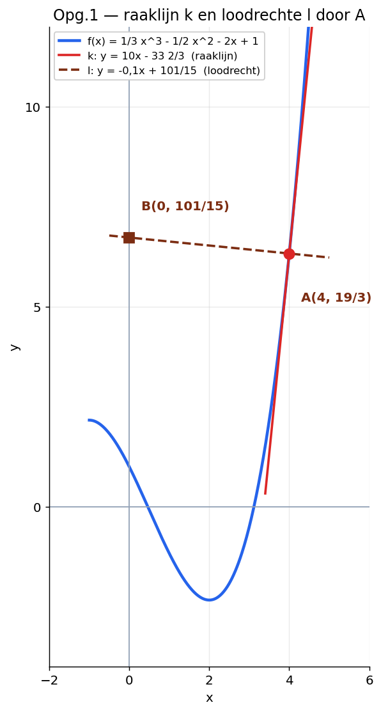
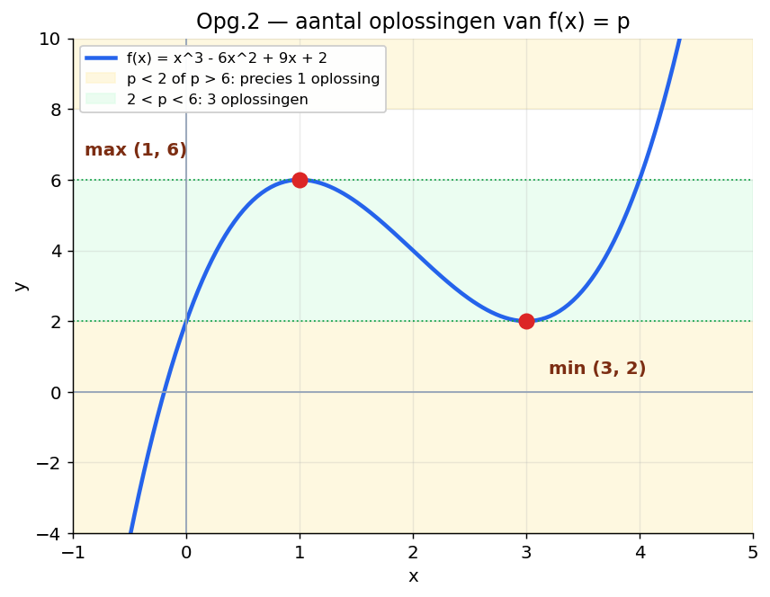

Op de toets krijg je gemengde opgaven. Dat zijn opgaven waar je §6.1, §6.2, §6.3 en §6.4 in één opgave moet combineren.
Vorige toets (exponenten — 3,8) ging mis op precies dit punt: welke strategie kies je? en welke tussenstappen schrijf je op?
Op deze pagina trainen we dat. Eerst de strategie-checklist. Dan een volledig uitgewerkt voorbeeld. Daarna oefen je zelf met vier opgaven uit de gemengde opgaven van §6.
📺 Samenvattingsvideo's van Math with Menno
Vóór synthese-opgaven helpt het om de hoofdlijnen van het hele hoofdstuk vers in je hoofd te hebben.
Klik op de knop hieronder. Je tutor neemt eerst de strategie-vragen met je door, voordat je gaat rekenen.
De 6 strategie-vragen
Stel jezelf elke synthese-opgave deze zes vragen voordat je begint met rekenen.
Wat zie ik? — Welk type functie? Machtsfunctie? Wortel? Breuk? Kettingregel nodig?
Wat moet ik? — Raaklijn opstellen? Extreme waarde? Loodrechte lijn? Optimaliseren?
Welke regels heb ik nodig? — Somregel? Machtsregel? Kettingregel? Loodrecht-regel (helling · helling = -1)?
Welke afspraken gelden? — Staat er "Bereken" of "Bereken exact"? Bij exact: geen rekenmachine, breuken en wortels in het antwoord.
Wat is mijn eerste stap? — Meestal: f'(x) berekenen. Of: eerst herleiden, dan differentiëren.
Wat moet ik opschrijven? — Alle tussenstappen. Ook stappen die voor de hand liggen.
Belangrijk: dit is geen lijst om snel af te vinken. Dit is de manier om strategie te kiezen voordat je gaat rekenen.
Walkthrough — Opgave 1 stap voor stap
We gaan Opgave 1 samen uitwerken. Niet om het antwoord te leren, maar om te zien hoe je de strategie-checklist toepast.
Onder elke stap staat een geel "Waarom?"-blokje. Dat is de redenering. Dat is wat een goede toets-uitwerking onderscheidt van een onvoldoende.
f(x) = ⅓x³ − ½x² − 2x + 1
a) Lijn k raakt de grafiek van f in punt A met xA = 4. Lijn l gaat door A, staat loodrecht op k, en snijdt de y-as in B. Bereken exact de coördinaten van B.

Figuur 1. De grafiek van f, raaklijn k in A en loodrechte lijn l door A.
Waarom dit eerst? Type functie bepaalt welke regels je nodig hebt. Hier: gewone machtsfunctie, dus somregel + machtsregel. Geen kettingregel.
Vraag 2 — Wat moet ik?
Coördinaten van punt B vinden. B ligt op de y-as en op lijn l.
Waarom dit? Zonder duidelijk doel reken je doelloos. B is op y-as: dat betekent x = 0. Ik moet dus de formule van l vinden, en dan x = 0 invullen.
Vraag 3 — Welke regels heb ik nodig?
Machtsregel voor f'(x). Loodrecht-regel: helling van k · helling van l = -1.
Waarom dit? De loodrecht-regel is de sleutel — zonder die regel kom ik niet aan de helling van l.
Vraag 4 — Welke afspraken gelden?
"Bereken exact" — dus geen rekenmachine, breuken laten staan.
Waarom dit? Als ik 19/3 ga afronden naar 6,33 verlies ik punten. Breuken moet ik door alle stappen heen behouden.
Vraag 5 — Wat is mijn eerste stap?
f'(x) berekenen.
Waarom dit? Ik heb f'(4) nodig voor de helling van k. Pas als ik die heb, kan ik via -1/(helling k) de helling van l vinden.
Vraag 6 — Wat moet ik opschrijven?
Alle stappen: f'(x), f'(4), yA, helling l, formule l, B.
Waarom dit? Bij synthese verlies ik punten als ik stappen oversla. Ook al lijkt het overbodig — schrijf het op.
Nu rekenen — alle stappen zichtbaar
Stap 1. Bereken f'(x)
f(x) = ⅓x³ − ½x² − 2x + 1
f'(x) = ⅓ · 3 · x² − ½ · 2 · x − 2
f'(x) = x² − x − 2
Waarom? Machtsregel per term. ⅓ · 3 = 1 (mooi), ½ · 2 = 1 (mooi). De +1 is een getal, dus afgeleide = 0.
Stap 2. Bereken helling van k: f'(4)
f'(4) = 4² − 4 − 2 = 16 − 4 − 2 = 10
Dus de helling van raaklijn k is 10.
Waarom? f'(xA) is altijd de helling van de raaklijn in het punt A.
Stap 3. Bereken yA = f(4)
f(4) = ⅓ · 64 − ½ · 16 − 2 · 4 + 1
f(4) = 64/3 − 8 − 8 + 1 = 64/3 − 15
f(4) = 64/3 − 45/3 = 19/3
Dus A(4, 19/3).
Waarom? Voor de formule van l heb ik een punt nodig waar l doorheen gaat — dat is A. Belangrijk: yA = f(4), niet f'(4)! Veelgemaakte fout.
Stap 4. Bereken helling van l
Lijn l staat loodrecht op k. Dus:
helling k · helling l = -1
10 · helling l = -1
helling l = -1/10 = -0,1
Waarom? Dat is de loodrecht-regel. Helling van l is dus de negatieve omgekeerde van helling k.
Stap 5. Stel formule van l op
l: y = -0,1 · x + b. Vul A(4, 19/3) in om b te vinden:
19/3 = -0,1 · 4 + b
19/3 = -0,4 + b
b = 19/3 + 0,4 = 19/3 + 2/5
Werk uit met gelijke noemer (15):
b = 95/15 + 6/15 = 101/15
Waarom met breuken doorgaan? Vraag zegt "bereken exact". 0,4 = 2/5 omzetten en daarna gelijke noemer maken houdt het exact.
Stap 6. Bereken B (snijpunt l met y-as)
Op de y-as is x = 0:
y = -0,1 · 0 + 101/15 = 101/15
Antwoord: B(0, 101/15).
Waarom dit ook opschrijven? Lijkt triviaal — x = 0 invullen — maar zonder die regel mist de uitwerking de afronding. Eindpunt B expliciet noteren.
LET OP
Bij synthese-opgaven is de strategie de helft van het werk. Het rekenen is de andere helft. Als je strategie klopt, komen de stappen vanzelf. Als je strategie niet klopt, raak je verdwaald — ook al kun je perfect rekenen.
Opgave 2 — voor welke p heeft f(x) = p precies één oplossing?
Gegeven is de functie:
f(x) = x³ − 6x² + 9x + 2

Figuur 2. Derdegraads functie met lokaal maximum (1, 6) en lokaal minimum (3, 2).
De grafiek heeft een lokaal maximum en een lokaal minimum. Bereken exact voor welke waarden van p de vergelijking f(x) = p precies één oplossing heeft.
Aanpak: bereken eerst de toppen. Daarna kun je via figuur 2 redeneren wanneer een horizontale lijn y = p de grafiek precies één keer snijdt.